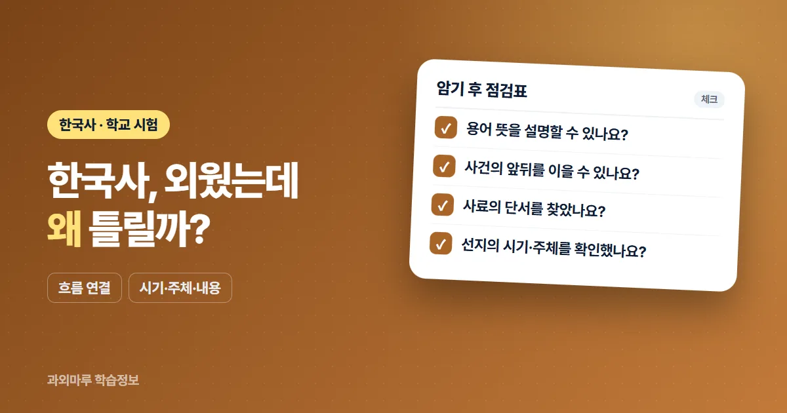

- 외운 내용을 설명할 수 있는지와 앞뒤 사건과 이을 수 있는지를 따로 확인합니다.
- 비슷한 사건은 시기·주체·방식·결과를 한 표에 놓고 비교합니다.
- 선지는 시기·주체·내용으로 나눠 하나씩 맞는지 봅니다.
한국사를 외웠는데 왜 문제를 틀릴까요?
용어나 연도를 보고 "아는 것 같다"고 느끼는 것과, 그 뜻과 앞뒤 흐름을 설명하는 것은 다른 단계이기 때문입니다. 학교 시험 문제는 용어 자체보다 사건의 원인과 결과, 비슷한 사건과의 차이를 묻는 경우가 많아, 외운 내용을 연결하는 과정이 함께 필요합니다.
외우는 공부는 한국사의 기초이므로 필요합니다. 다만 틀린 문제를 아래처럼 나눠 보면, 외운 내용의 어느 부분을 더 연결해야 하는지 보입니다.
| 막히는 곳 | 이런 모습이 보여요 | 확인 질문 |
|---|---|---|
| 용어의 뜻 | 용어는 기억하지만 무엇을 하는 제도·기구인지 말하지 못함 | 이 용어를 한 문장으로 설명할 수 있나요? |
| 사건의 흐름 | 사건을 따로 외워 앞뒤 순서나 관계를 놓침 | 이 사건 바로 앞과 뒤에 무슨 일이 있었나요? |
| 배경·전개·결과 | 사건의 이유와 결과를 섞어서 기억함 | 왜 일어났고, 어떻게 끝났나요? |
| 사료의 단서 | 처음 보는 자료에서 아는 내용을 떠올리지 못함 | 자료의 어떤 낱말이 단서인가요? |
| 비슷한 사건 | 시기·인물·내용이 비슷한 두 사건을 바꿔 기억함 | 두 사건의 시기와 주체가 어떻게 다른가요? |
| 선지 판단 | 선지의 일부만 맞는데 옳다고 고름 | 선지의 시기·주체·내용이 모두 맞나요? |
한 문제에 여러 원인이 겹칠 수 있고, 한 번의 시험만으로 학생의 공부 방식을 판단하기는 어렵습니다. 몇 번의 시험지에서 자주 나오는 원인을 찾는 것이 좋습니다.
사건의 배경·전개·결과는 어떻게 나눠 정리하나요?
사건 하나를 외울 때 "왜 일어났는지(배경·목적) → 어떻게 진행됐는지(전개) → 어떻게 끝났는지(결과) → 이후 무엇과 이어지는지"를 칸으로 나눠 적어 보세요. 칸이 비는 곳이 아직 연결되지 않은 부분입니다.
아래는 국사편찬위원회 우리역사넷의 설명을 바탕으로 갑신정변을 정리한 예시입니다.
| 칸 | 갑신정변 (1884) |
|---|---|
| 배경·목적 | 김옥균을 중심으로 한 개화당이 청의 간섭에서 벗어난 조선의 독립을 이루려 함 |
| 전개 | 우정국 개국 축하 연회를 계기로 정변을 일으키고 개혁 정강을 발표함 (14개 조항이 『갑신일록』에 전함) |
| 결과 | 청군의 공격으로 3일 만에 실패하고, 김옥균·박영효 등은 일본으로 망명함 |
| 이후 연결 | 갑오개혁 시기에 박영효 등이 귀국해 김홍집과 함께 내각에 참여함 |
이렇게 정리하면 "갑신정변 = 3일 만에 실패"처럼 결과만 외웠을 때보다, 그 결과가 어떤 목적과 과정에서 나왔는지, 10년 뒤 어떤 사건과 이어지는지 함께 떠올리기 쉽습니다. 칸을 다 채운 뒤에는 표를 가리고 말로 설명해 봅니다.
비슷한 시대의 사건이 헷갈리면 어떻게 구분하나요?
헷갈리는 두 사건을 한 표에 놓고 시기, 주도 세력, 방식, 결과를 같은 줄에서 비교해 보세요. 차이가 나는 칸이 곧 시험에서 선지로 바뀌기 쉬운 부분입니다.
| 구분 | 갑신정변 | 갑오개혁 |
|---|---|---|
| 시기 | 1884년 | 1894년~1896년 |
| 주도 세력 | 김옥균 중심의 개화당 | 군국기무처 총재관 김홍집 등 |
| 방식 | 우정국 개국 축하 연회를 계기로 일으킨 정변 | 군국기무처를 중심으로 추진한 개혁 |
| 외세와의 관계 | 청군의 공격으로 실패 | 일본의 압력 속에서 시작되고 영향을 받음 |
| 결과 | 3일 만에 실패, 주도 인물들의 일본 망명 | 아관파천으로 개화파 내각이 무너지며 실패 |
두 사건 모두 "개혁"과 "개화"라는 말이 함께 나와 헷갈리기 쉽습니다. 연도 차이(10년)와 주도 인물, 실패하게 된 상황을 한 쌍으로 기억하면 구분이 쉬워집니다. 표의 칸은 교과서와 학교 수업 자료의 설명에 맞춰 채우고, 학교에서 강조한 내용을 우선합니다.
사료 문제는 어떤 단서로 아는 내용과 연결하나요?
사료(그 시대에 남겨진 기록이나 자료)에서 시기·인물·제도를 짐작하게 하는 낱말에 먼저 표시하고, 그 낱말을 외운 내용과 연결합니다. 사료 전체를 해석하려 하기보다 단서 두세 개를 찾는 것이 출발점입니다.
예를 들어 갑신정변 때 발표한 정강에는 "문벌을 폐지하여 인민평등의 권리를 제정하고"라는 조항이 있습니다. 여기서 문벌 폐지, 인민 평등이 단서이고, "정강"과 함께 나오면 갑신정변의 개혁 정강을 떠올릴 수 있습니다.
- 단서 표시 — 인물 이름, 기구 이름, 연도, 특징적인 낱말에 밑줄을 긋습니다.
- 떠오르는 사건 적기 — 단서마다 떠오르는 사건을 적고, 겹치는 사건을 고릅니다.
- 반대 근거 확인 — 그 사건과 맞지 않는 단서가 있는지 다시 봅니다.
- 교과서와 대조 — 틀렸다면 교과서의 같은 단원에서 그 단서가 어떻게 설명되는지 찾아 적습니다.
처음 보는 사료가 나와도 단서를 찾는 순서는 같습니다. 단서를 찾았는데도 사건을 고르지 못했다면, 사료보다 앞 단계인 흐름 정리나 비교표가 비어 있는 경우가 많습니다.
선지에서 시기·주체·내용은 어떻게 나눠 확인하나요?
선지 한 문장을 "언제(시기) · 누가(주체) · 무엇을(내용)"으로 나누고, 세 부분이 모두 맞을 때만 옳은 선지로 봅니다. 한 부분만 다른 사건의 내용으로 바뀐 선지가 자주 함정이 됩니다.
아래 문제는 이 글을 위해 직접 만든 학습 예시이며, 기출문제가 아닙니다.
예시 문제. 갑신정변에 대한 설명으로 옳은 것은?
- ① 1894년 군국기무처를 중심으로 추진되었다.
- ② 김옥균 등 개화당이 우정국 개국 축하 연회를 계기로 일으켰다.
- ③ 김홍집이 총재관을 맡아 개혁을 이끌었다.
- ④ 청군의 도움으로 정권을 오래 유지하였다.
| 선지 | 시기·주체·내용 확인 | 판단 |
|---|---|---|
| ① | 시기 1894년 ✕ · 내용 군국기무처 ✕ | 갑오개혁의 시기와 기구입니다. |
| ② | 주체 김옥균 등 개화당 ○ · 내용 우정국 개국 축하 연회 ○ | 정답 |
| ③ | 주체 김홍집 ✕ · 내용 총재관 ✕ | 군국기무처 총재관 김홍집은 갑오개혁과 관련됩니다. |
| ④ | 내용 청군의 도움·오래 유지 ✕ | 청군의 공격으로 3일 만에 실패했습니다. |
①과 ③은 모두 맞는 역사 사실이지만 갑신정변이 아니라 갑오개혁의 내용입니다. "사실인가"보다 "이 사건의 설명인가"를 확인하는 습관이 필요합니다.
틀린 이유를 보고 복습할 내용은 어떻게 정하나요?
틀린 문제마다 앞의 표에서 원인을 하나 골라 적고, 원인에 맞는 복습 활동을 정합니다. 같은 원인이 여러 번 나오면 그 활동을 먼저 합니다.
| 틀린 이유 | 다시 해 볼 활동 |
|---|---|
| 용어의 뜻 | 용어를 한 문장으로 설명하는 카드를 만들고 소리 내어 설명하기 |
| 사건의 흐름 | 단원의 사건을 연표에 순서대로 놓고 화살표로 원인과 결과 잇기 |
| 배경·전개·결과 | 사건마다 네 칸 표(배경·전개·결과·이후)를 채우고 가린 뒤 말해 보기 |
| 사료의 단서 | 틀린 사료의 단서 낱말을 표시하고 교과서의 같은 설명 찾기 |
| 비슷한 사건 | 헷갈린 두 사건의 비교표 만들기 |
| 선지 판단 | 틀린 선지를 시기·주체·내용으로 나눠 어느 부분이 다른지 적기 |
복습 범위는 학교 시험 범위와 교과서 단원을 기준으로 정합니다. 학교와 교과서에 따라 단원 구성과 강조점이 다를 수 있으므로, 학교 수업 자료를 우선해 주세요. 시험 직후 오답을 정리하는 일반적인 순서는 중간고사 끝난 뒤 2주, 시험 결과 분석과 오답 정리법에서도 볼 수 있습니다.
학부모는 무엇을 물어보고, 어떤 부분에 설명이 필요할까요?
암기 여부를 확인하는 질문보다 아이가 사건의 이유와 관계를 말로 설명하게 하는 질문이 도움이 됩니다. 설명이 막히는 지점이 다음에 복습할 부분입니다.
- "이 사건은 왜 일어났고 어떻게 끝났어?"
- "이 사건 바로 다음에는 어떤 일이 이어졌어?"
- "헷갈린 두 사건은 무엇이 달라?"
- "이 선지는 시기·주체·내용 중 어디가 틀렸어?"
| 혼자 복습하기 좋은 부분 | 설명·피드백이 있으면 좋은 부분 |
|---|---|
| 용어 카드 만들기와 연표 순서 외우기 | 비교표를 만들었는데도 사건이 계속 섞일 때 |
| 네 칸 표 채우기 | 원인과 결과의 관계를 설명하지 못할 때 |
| 틀린 선지를 세 부분으로 나눠 다시 보기 | 사료에서 단서를 찾아도 사건을 고르지 못할 때 |
1:1 수업에서는 일반적으로 학교 시험 범위와 최근 시험지의 틀린 문제를 먼저 함께 보고, 흐름 정리와 비교표 중 필요한 연습부터 진행하는 경우가 많습니다.
자주 묻는 질문
한국사를 외웠는데 시험에서 틀리는 이유는 무엇인가요?
용어를 알아보는 것과 그 뜻과 흐름을 설명하는 것이 다르기 때문인 경우가 많습니다. 틀린 문제를 용어의 뜻, 사건의 흐름, 사료의 단서, 비슷한 사건 구분, 선지 판단으로 나눠 보면 어느 부분을 더 연결해야 하는지 확인할 수 있습니다.
한국사 흐름은 어떻게 정리하나요?
사건마다 배경·목적, 전개, 결과, 이후 연결의 네 칸을 채우고, 단원의 사건을 연표에 순서대로 놓아 원인과 결과를 화살표로 이어 봅니다. 다 채운 뒤에는 표를 가리고 말로 설명해 확인합니다.
비슷한 한국사 사건이 헷갈리면 어떻게 구분하나요?
두 사건을 한 표에 놓고 시기, 주도 세력, 방식, 결과를 같은 줄에서 비교합니다. 차이가 나는 칸을 한 쌍으로 기억하면 선지에서 바뀐 부분을 찾기 쉬워집니다.
한국사 사료 문제는 어떻게 연습하나요?
사료에서 인물·기구·연도·특징적인 낱말 같은 단서에 표시하고, 단서마다 떠오르는 사건을 적어 겹치는 사건을 고릅니다. 틀렸다면 교과서의 같은 단원에서 그 단서가 어떻게 설명되는지 찾아 적어 둡니다.
한국사는 외우지 않고 이해만 하면 되나요?
용어와 연도, 인물을 외우는 공부는 한국사의 기초이므로 필요합니다. 외운 내용을 흐름과 비교표로 연결하고 말로 설명해 보는 과정을 함께 하면 문제에서 활용하기 쉬워집니다.
참고 자료
- 국사편찬위원회 우리역사넷, 「갑신정변」 — https://contents.history.go.kr/mobile/kc/view.do?levelId=kc_i400500&code=kc_age_40
- 국사편찬위원회 우리역사넷, 「갑오개혁」 — https://contents.history.go.kr/mobile/kc/view.do?levelId=kc_i400600&code=kc_age_40
이 글은 학교 한국사 공부를 위한 일반적인 참고 정보이며, 예시 문제는 직접 만든 학습 예시로 기출문제가 아닙니다. 단원 구성과 시험 범위는 학교와 교과서에 따라 다르므로 학교 수업 자료를 우선해 주세요.
학년과 시험 범위, 최근 시험지의 틀린 문제를 남겨주시면 상담 내용을 확인해 안내드립니다.